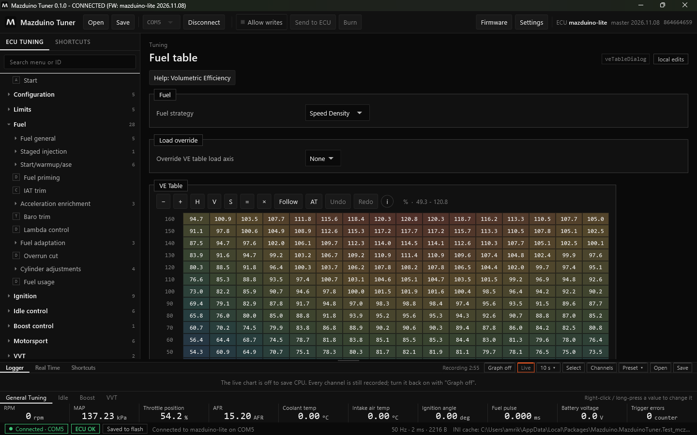
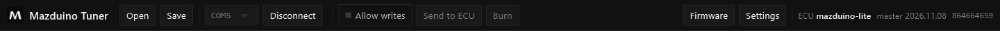
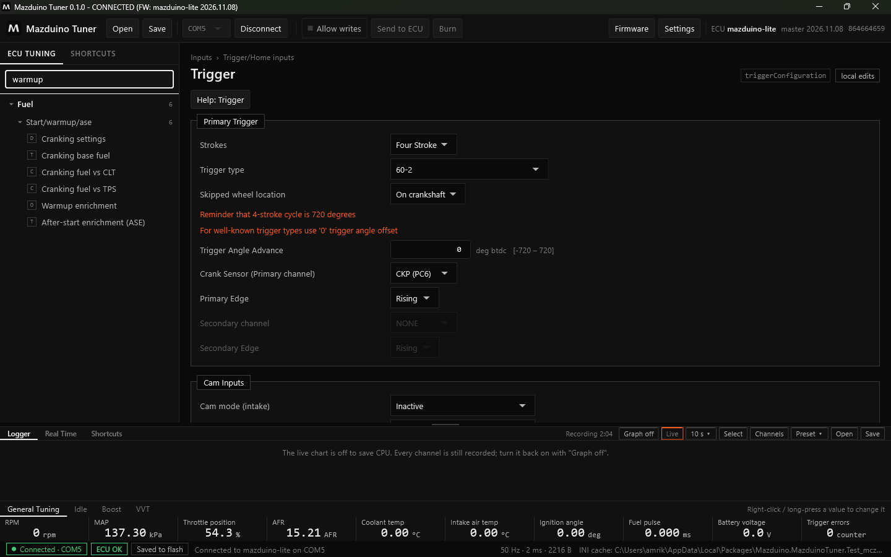
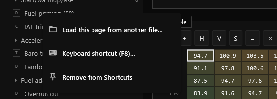
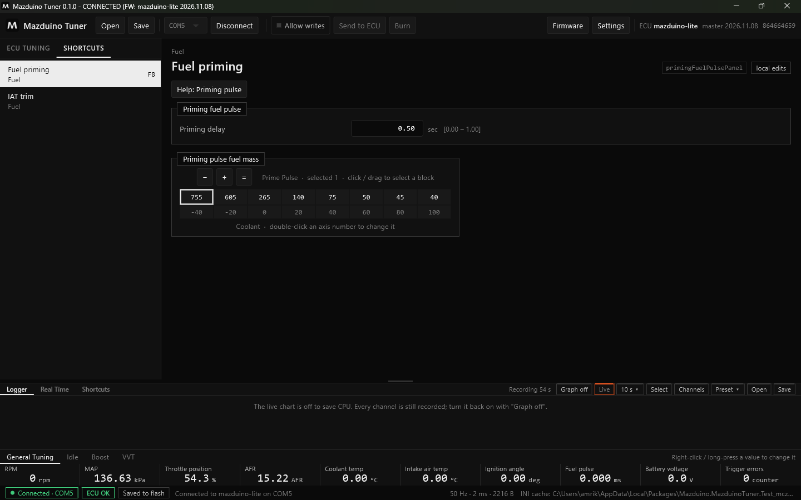

Terakhir diperbarui: 9 November 2026
Koneksi dan Tampilan Mazduino Tuner¶
Halaman ini menjelaskan cara menghubungkan ECU dan bagian-bagian tampilan Mazduino Tuner.
Menghubungkan ECU¶
- Colokkan ECU ke USB.
- Pilih port di toolbar (misalnya
COM5). - Klik Connect.
Saat terhubung, status bar di kiri bawah menampilkan Connected · COM5 dan ECU OK. Klik Disconnect untuk melepas. Saat disconnect atau aplikasi ditutup, port serial benar-benar dilepas sehingga bisa dipakai aplikasi lain.
Auto-connect
Aktifkan Auto-connect di Settings agar aplikasi langsung connect ke port terakhir setiap kali ECU dicolok.
Bagian-bagian Tampilan¶

| Bagian | Letak | Fungsi |
|---|---|---|
| Judul jendela | paling atas | Versi aplikasi, status koneksi, nama proyek, dan firmware |
| Toolbar | atas | Open/Save proyek, port, Connect, Allow writes, Send to ECU, Burn, Firmware, Settings |
| Menu | kiri | Semua halaman pengaturan ECU, dikelompokkan per sistem mesin, dengan pencarian |
| Halaman | tengah | Pengaturan, tabel, atau kurva dari menu yang dipilih |
| Panel bawah | bawah | Logger, Real Time, dan Shortcuts |
| Nilai utama | di bawah panel | RPM, MAP, TPS, AFR, suhu, dan lainnya, selalu terlihat |
| Status bar | paling bawah | Status koneksi, status burn, pesan terakhir, kecepatan data |
Judul Jendela¶
Judul jendela menunjukkan:
- Versi Mazduino Tuner
- Status:
CONNECTED,CONNECTING,RECONNECTING,OFFLINE(proyek dibuka tanpa ECU), atauDISCONNECTED - Nama proyek
.mdtyang terbuka. Tanda*berarti ada perubahan yang belum disimpan ke file. - FW: board dan tanggal firmware dari tune yang sedang tampil
Toolbar¶

| Tombol | Fungsi |
|---|---|
| Open | Membuka proyek tune .mdt. Bisa diedit tanpa ECU; saat ECU terhubung tune dibandingkan. |
| Save | Menyimpan tune ke proyek .mdt. Shift+klik untuk menyimpan sebagai file baru. |
| Port | Memilih port USB ECU |
| Connect / Disconnect | Menghubungkan atau melepas ECU |
| Allow writes | Mengizinkan aplikasi menulis ke ECU (hanya sesi ini) |
| Send to ECU | Mengirim perubahan yang tertunda ke RAM ECU |
| Burn | Menyimpan isi RAM ECU ke flash agar tetap ada setelah ECU mati |
| Firmware | Update firmware ECU. Lihat Update Firmware. |
| Settings | Pengaturan aplikasi |
Di kanan toolbar tertulis board dan versi firmware ECU yang terhubung.
Menu dan Pencarian¶
Menu di kiri dikelompokkan per sistem mesin, misalnya Configuration, Limits, Fuel, Ignition, Idle control, Boost control, VVT, CAN Bus, Inputs, Outputs, Tuning, Diagnostics, dan Expert. Angka di kanan menunjukkan jumlah halaman di dalam grup. Halaman untuk fitur yang tidak aktif disembunyikan. Pengaturan yang jarang dipakai ada di grup Expert.
Ketik di kotak Search menu or ID untuk mencari halaman. Hasilnya langsung tersaring:

Ikon kecil di depan nama halaman menunjukkan jenisnya:
| Ikon | Jenis |
|---|---|
| D | Halaman pengaturan (dialog) |
| T | Tabel 2D |
| C | Kurva |
| A | Halaman aplikasi (Start, diagnostik) |
Di kanan atas setiap halaman ada ID halaman (misalnya veTableDialog) yang juga bisa dicari,
dan label mode tulis: local edits (perubahan hanya di aplikasi) atau writes allowed.
Klik Kanan pada Halaman¶
Klik kanan sebuah halaman di menu (di layar sentuh: tekan lama):

| Pilihan | Fungsi |
|---|---|
| Load this page from another file... | Memuat pengaturan halaman ini saja dari file .mdt atau .msq. Lihat Memuat Satu Halaman dari File. |
| Keyboard shortcut... | Memberi halaman ini tombol F2 sampai F12, atau menghapusnya (No shortcut). Daftar tombol menunjukkan halaman mana yang sudah memakai tiap tombol; tombol yang dipilih pindah ke halaman ini. |
| Add to Shortcuts / Remove from Shortcuts | Menambah atau menghapus halaman dari tab SHORTCUTS |
Tombol yang dipakai halaman tertulis di samping namanya, misalnya Fuel priming (F8). Bawaan: F5 Fuel table, F6 target AFR/Lambda, F7 Ignition table, F11 Trigger. Semua bisa diganti.
Tab SHORTCUTS¶
Tab SHORTCUTS di atas menu berisi halaman yang Anda tambahkan, sesuai urutan ditambahkan. Klik untuk membuka, klik kanan untuk menu yang sama seperti di atas.

Panel Bawah¶
Panel bawah berisi tiga tab: Logger, Real Time, dan Shortcuts. Garis pembatas di atas panel bisa ditarik untuk memperbesar atau memperkecil panel. Lihat Logger dan Real Time.
Nilai Utama¶
Baris nilai di bawah panel selalu terlihat. Ada beberapa tab (General Tuning, Idle, Boost, VVT). Klik kanan (atau tekan lama) sebuah nilai untuk menggantinya dengan channel lain.
Status Bar¶
| Bagian | Arti |
|---|---|
| Connected · COM5 | ECU terhubung di port tersebut |
| ECU OK | Tidak ada error kritis di ECU |
| Saved to flash | Semua perubahan sudah di-burn. Jika belum, tombol Burn ikut menyala. |
| Pesan | Pesan terakhir aplikasi, misalnya hasil edit atau burn |
50 Hz · 1 ms · 2216 B |
Kecepatan data live, waktu respons ECU, dan ukuran data per baca |
| INI | Sumber file definisi (cache, unduhan, atau file) |
Halaman Start¶
Halaman Start menampilkan board, port, dan firmware ECU yang terhubung.